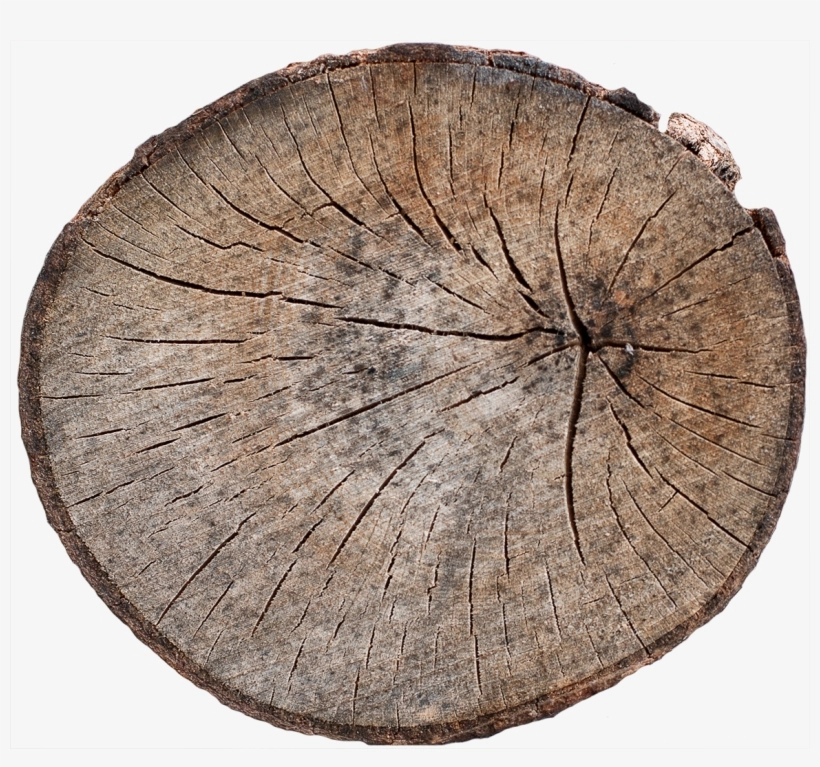

02/10/23 15:50 : Perfect Planks
I challenged myself to create a realistic environment with only one mesh. What's more ubiquitous then planks This is the nicest looking slide so don’t get your expectations up I really like chaotic, messy architecture particularly when it's just created quickly to serve a particular purpose I don't really know why but to me this is beautiful. However I find that it’s quite difficult to approach scenes like this with traditional modular building techniques often you end up making large sections out of engine which becomes difficult to change later and they're not very reusable pieces and I wanted to try and see whether something more fine grain was viable and so I thought I'd start with the planks. The main thing that makes this possible is stretchy meshes Which basically just means scaling the uvs with the object The name comes from this GDC talk about Obductions art tools but they do a way more complicated thing, which is probably useful if you’re making like steel bits or whatever but for wood I don't think it's needed The setup is pretty easy you just need a standard mesh with trim style uvs. A seamless wood texture and then a couple nodes you might have to flip shit around depending on how the uvs are setup or whatever but it’s pretty simple and then you can just make your planks whatever scale you need and don't have to worry about your textures becoming stretched or two objects having different texel densities. And it cuts down on all the time spent searching if you've got a large set of assets, even if you have the perfect plank to fit an area you still have to find it whereas with this it just works everytime. And already with just that you can already get some nice scenes theses only took a few minutes to put together And they’re really fun to build because it's basically just cubes. you don’t have to unwrap it or break it into modular pieces you can just think about the shapes and how things connect etc. And this would probably be good enough for most scenes but if your using this heavily it can get a bit repetitive and look very uniform. So if you want the perfect planks you need to add variation.
Variation
The easiest way to get variation is by having a random value for each plank in the level Alot of people say to do this shit with the position to get a random value but it can look quite bad where there’s big sections with the same value and I’m sure there's probably ways to make it look better but that just seemed like a rabbit hole to me. Maybe something for next week So I just did it the lazy way with object position into noise If your doing this for foliage though you can just do the per instance random thing and your all good I really feel like this is something that unreal should be able to give you like an id or something but whatever, if anyone knows a better way let me know. And from there now that you have a random value per plank you can use that in a lerp to blend the texture with a color to make each plank a unique shade You can also add that value to the x of the uvs so that planks that are stacked next to each other don’t have obviously duplicate textures This isn’t a particularly good example but on textures with higher contrast this is much more noticeable Anything you can add to make it seem less repetitive without needing any additional work is great, like obviously you could make copies of the mesh and manually edit their uvs but we’re trying to make it look good quickly The shape needs to be varied aswell And as it turns out wood can bend sometimes, and often in these types of scenes the wood shouldn’t be perfect to begin with so it needs to be deformed And that can of course be done with world position offset you sample some noise so that there’s a random gradient along the length of the plank and then you can just put that straight into the offset Which is all you really need but it can be quite annoying to edit because the whole plank will wobble around and intersect with things when you try and move it So I just made a gradient using the local position where both the start and end were dark, and multiplied it that way only the bit in the middle gets moved. I found that just displacing it left and right was enough to create good looking variation, but you could get easily get as complicated as you want with implementing different types of bends And that looks like this You can play around with the scale of the noise and the intensity Obviously more subdivisions are gonna give a smoother bend At higher intensities you can achieve quite a stylized effect which I thought was cool but keeping it subtle works too I was surprised actually how much of an impact it made even when it wasn’t particularly noticeable Bonus stuff Putting gradients on anything makes it look better I don’t really know why, maybe because it fakes like occlusion or dirt or something But dishonored does it all the time and you can just use the same gradient from the bending stuff so I put that on top of the texture and it adds a lot. Putting the origin on one side of the plank rather than in the center makes it way easier to use because then you can put it on one side of a gap and scale to fit. This is more of a minor side note but a problem with the warping setup is that the bigger the mesh gets the more warped it’s gonna be, which is kind of the opposite of what you want to happen like realisticly the smaller sticks should be bending the most. To fix this you can do a little hack and remap the y scale so that past a certain size planks are no longer warped And from there you can sort of add on the normal techniques that you might use like Vertex painting to add painted or burnt or moldy areas Blending based on the world normal to have dirt or dust or whatever only on the tops of planks I didn't actually end up doing that because I think it looks kind of bad on flat surfaces And that's about it It’s a little weird to get used to because the planks constantly change when your moving them. but just being able to fix intersections between pieces or add new stuff easily is really nice I haven't looked into it too much performance wise but to me there's no obvious reason why it shouldn't be able to handle this. my general idea that I think is more interesting than any of the specifics techniques is that, alot of our environment techniques are very should be shifted to in engine work obviously you'll still need custom specific meshes, but those really make up a very small part of the scene
Different types of wood bends
Future
- Better solution for bevelling edges
- End caps 
Damage Decals
Using texture bombing or something similar,
Some future things that I think could make it better Maybe ultimate trims thing with the normals or somehow directly hold the vertices so that they’re always even How to handle end caps like you could easily just use a different material so that the ends can have a seperate texture but I think theyre's better ways of doing it. Theres a lot more object types that you could apply the techniques to. I'd quite like to try a level that's entirely made out of these dynamic pieces. I’ve seen some cheap ways of scattering textures all within the material so I think it would be possible to add some scratches or dents or whatever over top to add more detail